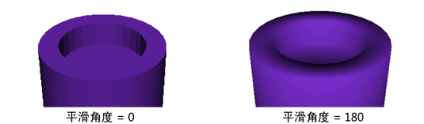

使用这些选项可设置在选择“编辑网格 > 挤出”(Edit Mesh > Extrude)时发生的情况。
注： 在“挤出”(Extrude)选项窗口中显示的选项取决于当前的多边形组件选择。如果没有任何有效的选择，默认情况下会显示挤出面选项。
- 宽度(Width)（顶点）
-
控制挤出创建的多边形的基准的宽度。
- 长度(Length)（顶点）
-
要沿着其法线移动挤出的顶点的距离。
- 分段(Divisions)
-
控制沿着挤出的长度的分段数。
- 平滑角度(Smoothing angle)（面和边）
-
指定挤出的几何体的边是软的还是硬的。如果希望挤出的边看起来是软的，请将“平滑角度”(Smoothing angle)设置为较大的值（例如，180）。如果希望挤出的边看起来是硬的，请将“平滑角度”(Smoothing angle)设置为较小的值（例如，0）。挤出的面和边的默认平滑角度为 30。
 - 偏移(Offset)（面和边）
-
输入值以偏移挤出的面的边。此处还显示用于提取和复制面的偏移以供比较。
该选项可以用于使用“提取”(Extract)为围绕面的挤出、剪切生成倒角效果，并均匀缩放复制的面。

- 厚度(Thickness)（面和边）
-
指定选定面的深度。
- 曲线(Curve)（面和边）
-
将该设置配置为“选定”(Selected)（默认）或“已生成”(Generated)时，请将场景中的选定曲线用作路径挤出多边形。如果选择“选定”(Selected)或“已生成”(Generated)，那么挤出的多边形可以沿路径曲线进行扭曲和锥化。
如果选择“选定”(Selected)，则必须创建一条曲线，并将它与所需的位置对齐。
如果选择“已生成”(Generated)，则将创建曲线，并会将曲线与组件法线的平均值对齐。
- 锥化(Taper)（面和边）
-
在挤出的多边形沿着曲线移动时缩放它们。仅当沿着曲线挤出时，“扭曲”(Twist)才可用。
若要精确地控制锥化，请在“属性编辑器”(Attribute Editor)中打开“锥化曲线”(Taper Curve)区域，并使用图表控制来设置沿曲线长度的缩放。
- 扭曲(Twist)（面和边）
-
在挤出的多边形沿着曲线移动时旋转它们。仅当沿着曲线挤出时，“扭曲”(Twist)才可用。